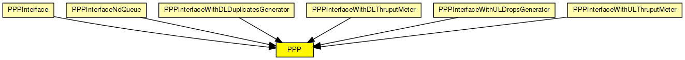

PPP implementation.
Packets are encapsulated in PPPFrame.
PPP is a complex protocol with strong support for link configuration and maintenance. This model ignores those details, and only performs simple encapsulation/decapsulation and queuing.
In routers, PPP relies on an external queue module (see OutputQueue) to model finite buffer, implement QoS and/or RED, and requests packets from this external queue one-by-one.
In hosts, no such queue is used, so PPP contains an internal queue named txQueue to queue up packets waiting for transmission. Conceptually, txQueue is of infinite size, but for better diagnostics one can specify a hard limit in the txQueueLimit parameter -- if this is exceeded, the simulation stops with an error.
There is no buffering done on received packets -- they are just decapsulated and sent up immediately.
See also: PPPInterface, OutputQueue, PPPFrame
The following diagram shows usage relationships between types. Unresolved types are missing from the diagram.
The following diagram shows inheritance relationships for this type. Unresolved types are missing from the diagram.
| Name | Type | Description |
|---|---|---|
| PPPInterface | compound module |
PPP interface. Complements the PPP module with an output queue for QoS and RED support. |
| PPPInterfaceNoQueue | compound module |
PPP interface. Assumes inifinite queue. |
| PPPInterfaceWithDLDuplicatesGenerator | compound module |
PPP interface. Complements the PPP module with an output queue for QoS and RED support. |
| PPPInterfaceWithDLThruputMeter | compound module |
PPP interface. Complements the PPP module with an output queue for QoS and RED support. |
| PPPInterfaceWithULDropsGenerator | compound module |
PPP interface. Complements the PPP module with an output queue for QoS and RED support. |
| PPPInterfaceWithULThruputMeter | compound module |
PPP interface. Complements the PPP module with an output queue for QoS and RED support. |
| Name | Type | Default value | Description |
|---|---|---|---|
| txQueueLimit | int | 1000 |
only used if queueModule==""; zero means infinite |
| queueModule | string | "" |
name of external (QoS,RED,etc) queue module |
| mtu | int | 4470 |
| Name | Value | Description |
|---|---|---|
| display | i=block/rxtx |
| Name | Direction | Size | Description |
|---|---|---|---|
| netwIn | input | ||
| netwOut | output | ||
| phys | inout |
// // \PPP implementation. // // Packets are encapsulated in PPPFrame. // // \PPP is a complex protocol with strong support for link configuration // and maintenance. This model ignores those details, and only performs // simple encapsulation/decapsulation and queuing. // // In routers, \PPP relies on an external queue module (see OutputQueue) // to model finite buffer, implement QoS and/or RED, and requests packets // from this external queue one-by-one. // // In hosts, no such queue is used, so \PPP contains an internal // queue named txQueue to queue up packets waiting for transmission. // Conceptually, txQueue is of infinite size, but for better diagnostics // one can specify a hard limit in the txQueueLimit parameter -- if this is // exceeded, the simulation stops with an error. // // There is no buffering done on received packets -- they are just decapsulated // and sent up immediately. // // @see PPPInterface, OutputQueue, PPPFrame // simple PPP { parameters: int txQueueLimit = default(1000); // only used if queueModule==""; zero means infinite string queueModule = default(""); // name of external (QoS,RED,etc) queue module int mtu = default(4470); @display("i=block/rxtx"); gates: input netwIn; output netwOut; inout phys @labels(PPPFrame); }